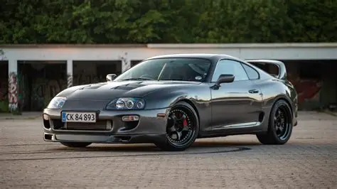

Galeria dos veiculos
Toyota Supra MK4

O Toyota Supra é um carro esportivo de renome mundial, conhecido por sua aparência elegante e desempenho excepcional.
Desde o seu lançamento inicial em 1978, o Supra tem evoluído significativamente ao longo dos anos, incorporando avanços tecnológicos e melhorias de desempenho para se manter atualizado em um mercado altamente competitivo.